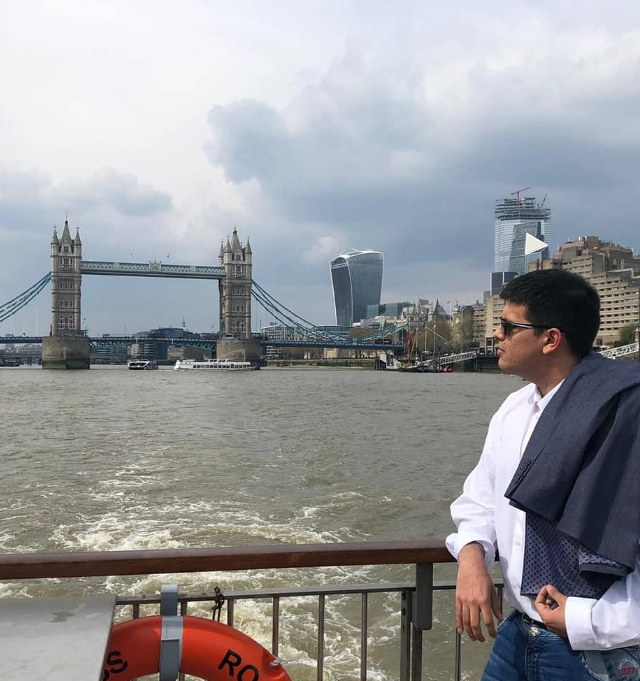

Hello everyone! 👋
My name is Orlando Velasco. I am from Colombia. Nowadays, I am studying software engineering technology at Centennial College (Toronto). I am graduated from Chemical Engineering with a master’s degree in Chemical Engineering and Process Management from London South Bank University. However, I have 3 years of experience in the software industry working as Product Specialist at Open International. I invite you to visit its website to know about this fantastic company.
What do I like to do? 😁:
- Spending time with my wife
- Travelling around the world
- Playing mobile games
- Reading comics, manga and novel
- Watching Movies and Series
- Dancing Salsa
Finally, before you leave, let me give one of my favorite’s quotes:
"If you really want to do something, you'll find a way. If you don't, you'll find an excuse"-Jim Rohn